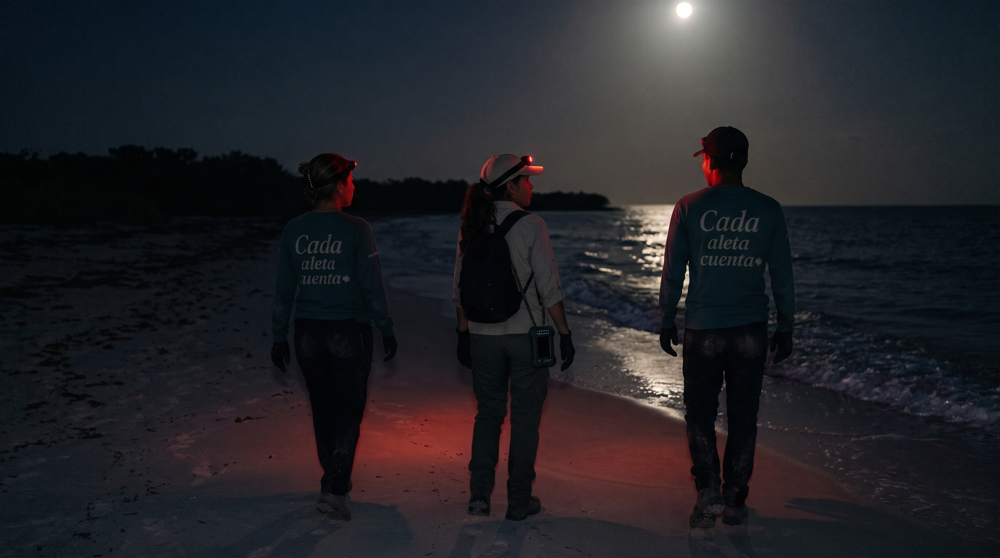
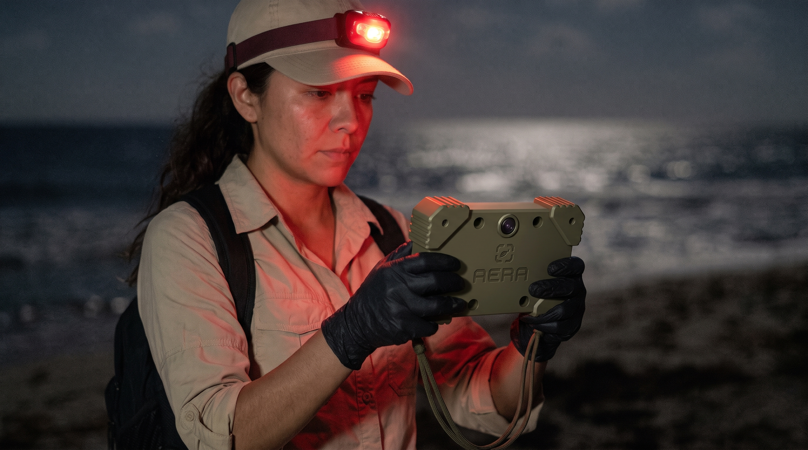

.png)

Cada aleta cuenta · Investigación · Conservación
Una pregunta
que se convierte en proyecto.
AERA es un producto que surge de Cada aleta cuenta y explora cómo acercar la tecnología al trabajo de investigación y conservación en campo.
De Cada aleta cuenta surge AERA.
Cada aleta cuenta es el proyecto del que surge AERA como producto tecnológico. Su desarrollo parte del trabajo de campo en entornos costeros y del interés por apoyar la investigación y la conservación con herramientas pensadas para ese contexto.
AERA continúa en etapa de prototipo. Su diseño y sus componentes se encuentran en desarrollo, y todavía requieren integración y validación.

Diseño situado
La ingeniería empieza por el contexto.
AERA explora la integración de un dispositivo físico, sensores ambientales, GPS y registro de datos. El proceso prioriza entender el entorno de uso y construir el prototipo de forma progresiva.
Cada componente debe evaluarse en relación con su propósito y las condiciones del trabajo de campo. La integración y validación aún están pendientes.
Ver el dispositivoProceso abierto
Un prototipo
que sigue evolucionando.
AERA se encuentra en etapa de desarrollo. El diseño del dispositivo y la exploración de sus componentes forman parte de un proceso en curso; el sitio no presenta sus funciones como resultados validados.
Lo que el proyecto
busca explorar.
01Avanzar en la integración de los componentes contemplados.
02Evaluar el prototipo en condiciones pertinentes de trabajo de campo.
03Comprender cómo la propuesta puede responder a necesidades de investigación y conservación.
Son objetivos de desarrollo; no representan resultados alcanzados.AERA · Tecnología · Conservación · Campo
El proyecto continúa tomando forma.
Este espacio se actualizará a medida que avance su desarrollo.
Volver al inicio